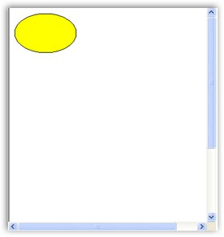
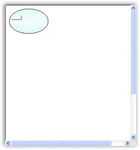
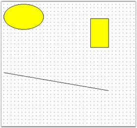

DiagramWebControl provides support for the following types of nodes.
· TextNode
· Shape
· Symbol
· ControlNode
· PathNode
· BitmapNode
· RichTextNode
· MetafileNode
· Group
· PseudoGroup
· FilledPath
· FilledShape
· RoundRect
· Polygon
· Rectangle
· ClosedCurveNode
· Ellipse
· PolylineNode
· CurveNode
· Line
· SplineNode
· Arc
· BezierCurve
· MeasureLine
· Polyline
· OrthogonalConnector
· LineConnector
· OrthogonalLine
· Link
· PolyLineConnector
Creating a Node at Run Time
To create and connect nodes, follow the below steps.
1. Drag the DiagramWebControl onto the web page.
2. Modify the code for the Page_Load function in the aspx.cs file as follows. (Ellipse is used in the current sample).
|
[C#]
protected void Page_Load(object sender, EventArgs e) { Syncfusion.Windows.Forms.Diagram.Ellipse ellipse = new Syncfusion.Windows.Forms.Diagram.Ellipse(10, 10, 110, 70); DiagramWebControl1.Model.AppendChild(ellipse); } |

Figure 5: Diagram with Node
Node Property Settings
The following example illustrates how to set the Node Property Settings for the DiagramWebControl.
|
[C#]
private void Form1_Load(object sender, EventArgs e) { Syncfusion.Windows.Forms.Diagram.Ellipse ellipse = new Syncfusion.Windows.Forms.Diagram.Ellipse(10, 10, 110, 70); DiagramWebControl1.Model.AppendChild(ellipse); ellipse.FillStyle.Color = System.Drawing.Color.AliceBlue; ellipse.FillStyle.ColorAlphaFactor = 100; ellipse.FillStyle.ForeColor = System.Drawing.Color.Aquamarine; ellipse.FillStyle.ForeColorAlphaFactor = 70; ellipse.FillStyle.Type = FillStyleType.PathGradient; ellipse.FillStyle.PathBrushStyle = PathGradientBrushStyle.RectangleCenter; ellipse.FillStyle.Type = FillStyleType.LinearGradient; ellipse.FillStyle.GradientAngle = 95; ellipse.FillStyle.GradientCenter = 0.5f; ellipse.EditStyle.AllowChangeHeight = true; ellipse.EditStyle.AllowChangeWidth = true; ellipse.EditStyle.AllowDelete = false; ellipse.EditStyle.AllowMoveX = true; ellipse.EditStyle.AllowMoveY = false; ellipse.EditStyle.AllowRotate = false; ellipse.EditStyle.AllowSelect = true; } |

Figure 6: Diagram with Node Property Settings
Creating Nodes and Links
The following code example illustrates how to create nodes and links.
|
[C#]
protected void Page_Load(object sender, EventArgs e) { Syncfusion.Windows.Forms.Diagram.Ellipse ellipse = new Syncfusion.Windows.Forms.Diagram.Ellipse(10, 10, 110, 70); Syncfusion.Windows.Forms.Diagram.Rectangle rectangle = new Syncfusion.Windows.Forms.Diagram.Rectangle(300, 50, 50, 80); Syncfusion.Windows.Forms.Diagram.LineConnector lineconnector = new Syncfusion.Windows.Forms.Diagram.LineConnector(new System.Drawing.PointF(10, 200), new System.Drawing.PointF(300, 250)); this.DiagramWebControl1.Model.AppendChild(ellipse); this.DiagramWebControl1.Model.AppendChild(rectangle); this.DiagramWebControl1.Model.AppendChild(lineconnector); } |

Figure 7: Diagram with Node and Link